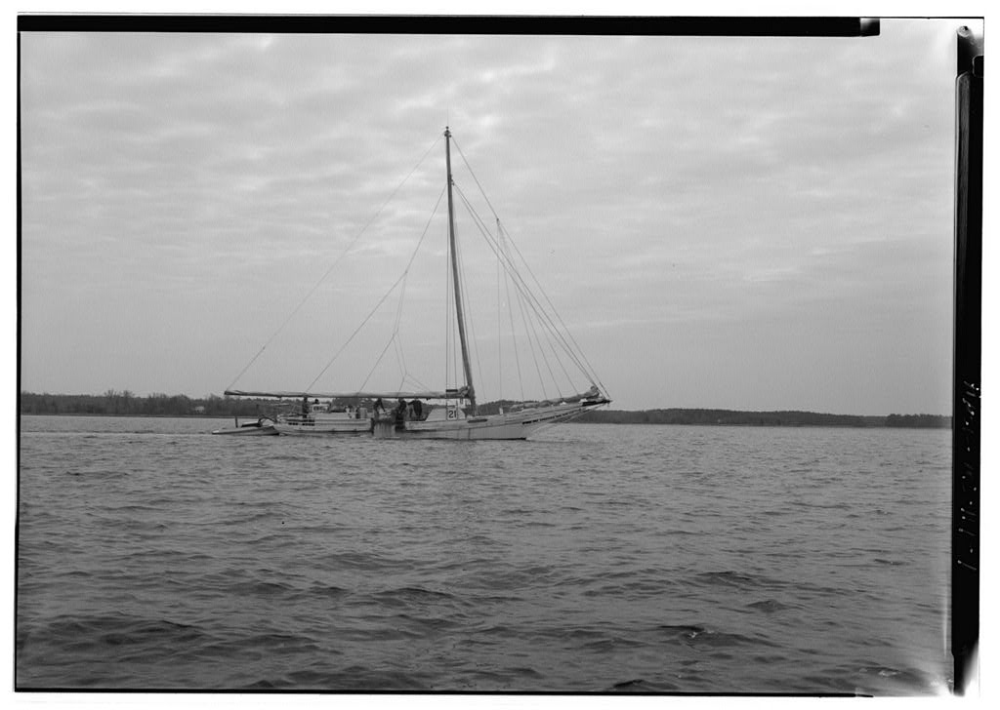
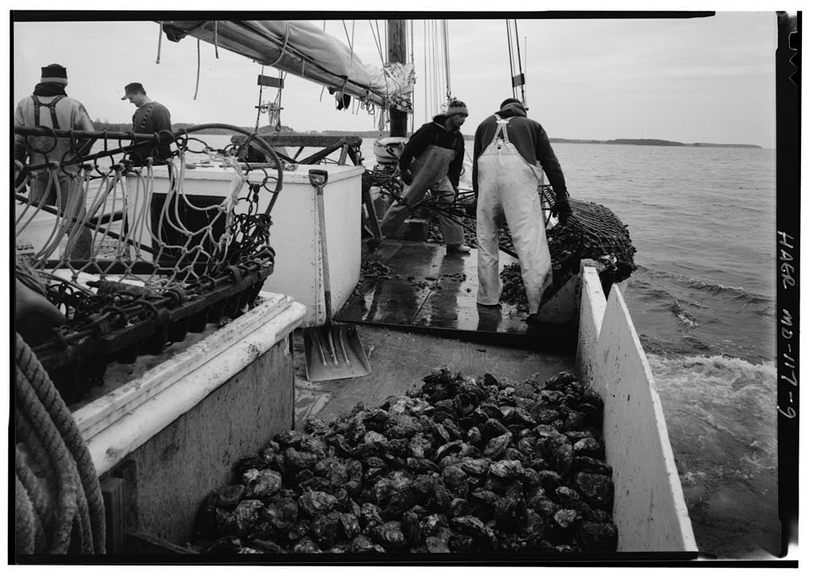
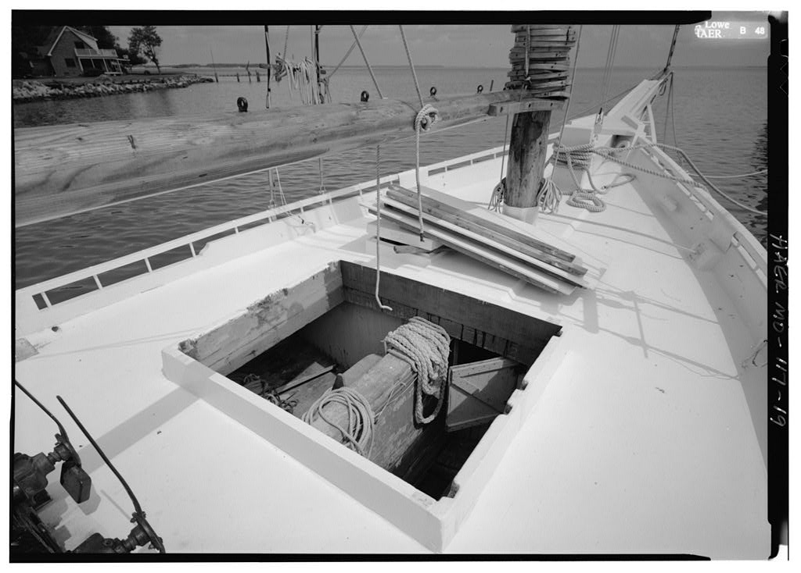
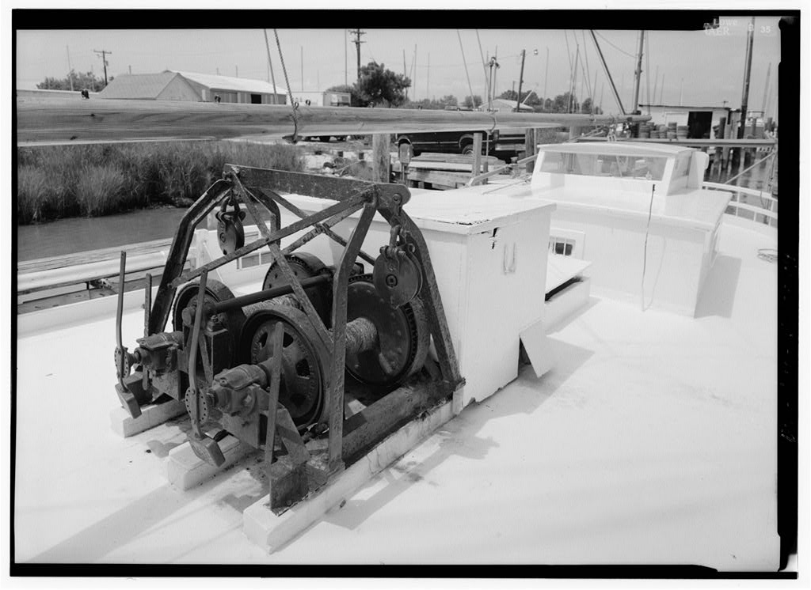
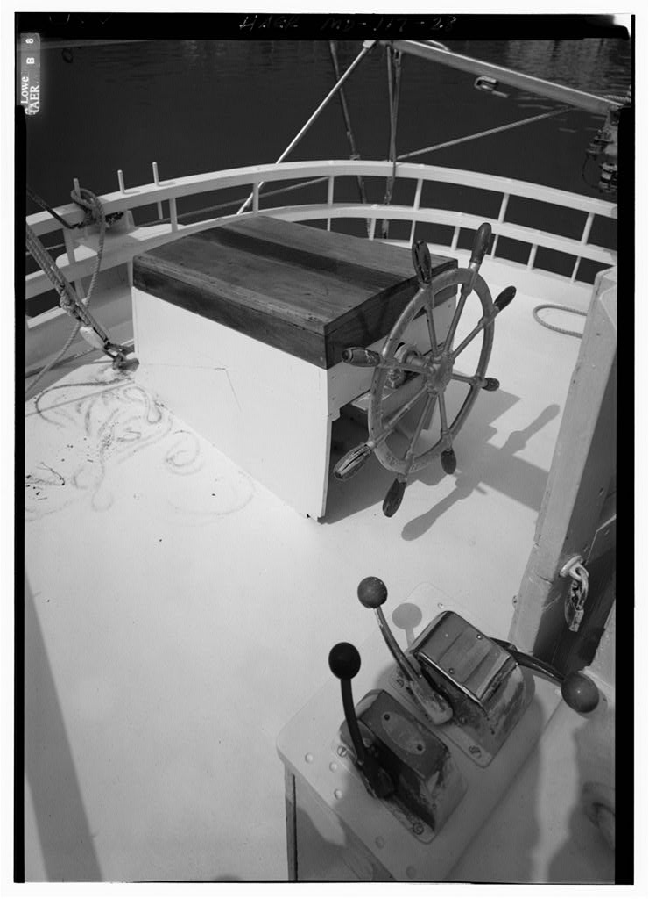
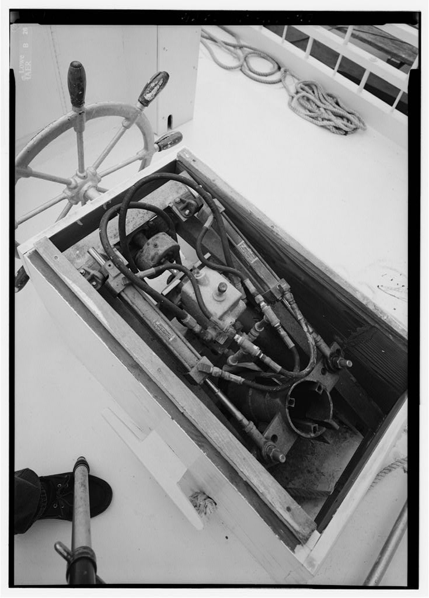
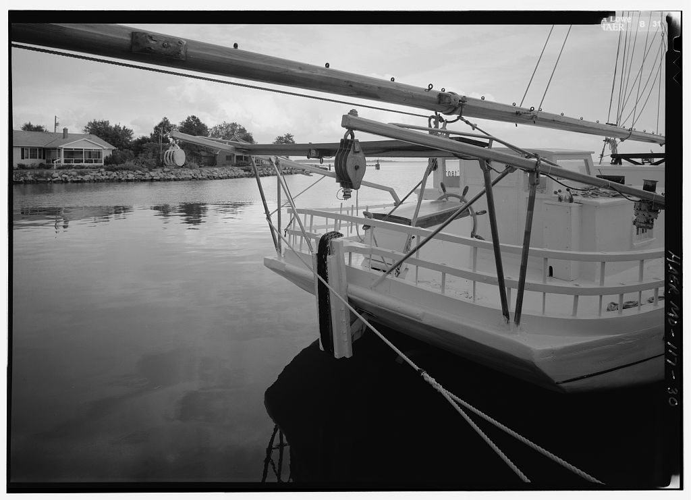
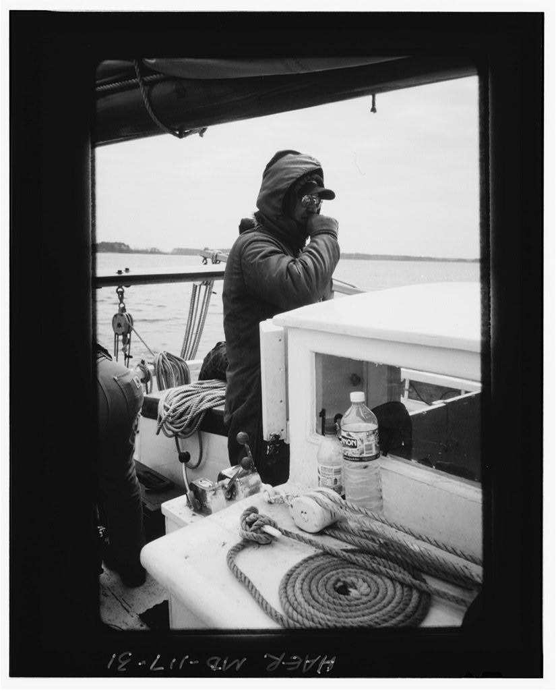

Kathryn — HAER MD-117 Library of Congress photographs
31 black-and-white photos plus one color transparency. Caption numbers differ from gallery page numbers.
LOC-P01 — 1. STARBOARD PROFILE WITH DREDGE BASKET BEING RAISED-NOTE 'LAZYJACK' RIGGING TO GUIDE SAILS DOWN TO BOOM AND CLUB (REQUIRES LESS CREW)

LOC page 2 · Original TIFF
LOC-P09 — 9. DREDGE ARRANGEMENT ALLOWS FOR TWO DREDGE BASKETS TO BE OUT AT ALTERNATING TIMES. WHILE STARBOARD IS HAULED IN, PORT IS RELEASED OUT TO DREDGE.

LOC page 10 · Original TIFF
LOC-P19 — 19. DECK VIEW LOOKING FORWARD WITH MAST, RIGGING AND BOWSPRIT DETAILS - HATCH COVER REMOVED TO SHOW CENTERBOARD TRUNK

LOC page 20 · Original TIFF
LOC-P24 — 24. DECK VIEW ASTERN WITH DETAIL OF WINDER MACHINERY - WINDER ENGINE IS IN WHITE BOX

LOC page 25 · Original TIFF
LOC-P28 — 28. DETAIL OF HELM AT STERN WITH WHEEL, PUSH BOAT CONTROLS, AND WINDER ENGINE CONTROLS

LOC page 29 · Original TIFF
LOC-P29 — 29. DETAIL OF HYDRAULIC STEERING SYSTEM CONNECTED TO RUDDER POST (REPLACED GEAR MECHANISM)

LOC page 30 · Original TIFF
LOC-P30 — 30. DETAIL OF STERN SHOWING HELM AND DAVITS AND BUMPER FOR THE PUSH BOAT

LOC page 31 · Original TIFF
LOC-P31 — 31. RUSSELL DIZE, CAPTAIN AND OWNER, AT HELM OF KATHRYN (Photocopy of 35mm color slide taken by Todd Croteau, 1997)

LOC page 32 · Original TIFF